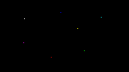
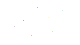
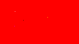
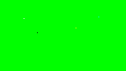
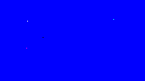
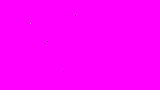
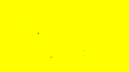
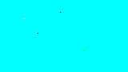

setAccessToken(get_credentials($_SESSION['userid']));
}
// A glass service for interacting with the Mirror API
$mirror_service = new Google_MirrorService($client);
// But first, handle POST data from the form (if there is any)
switch ($_POST['operation']) {
case "insertItemWithAction":
send_test_bundle($mirror_service);
$message = "Your test screens have been sent!";
break;
case "deleteAllItems":
$message = delete_test_bundles($mirror_service);
break;
}
?>
iSeeDeadPixels
When you first sign in, iSeeDeadPixels sends you a bundle of solid coloured screens to help you test your display. If these screens disappear from your timeline, you can click on the button below to send yourself another copy.
Black

"Stuck" or "hot" pixels are permanently turned on and look white on a 100% black screen.
You may also see stuck subpixels of other colours:
Red = a red subpixel is stuck
Green = a green subpixel is stuck
Blue = a blue subpixel is stuck
Magenta = red and blue subpixels are stuck
Yellow = red and green subpixels are stuck
Cyan = green and blue subpixels are stuck
White

Dead pixels look black on a 100% white screen.
You may also see partially dead subpixels in the form of colored dots:
Magenta = a green subpixel is dead
Yellow = a blue subpixel is dead
Cyan = a red subpixel is dead
Red = green and blue subpixels are dead
Green = red and blue subpixels are dead
Blue = red and green subpixels are dead
Red

A dead red subpixel looks black on a 100% red screen.
A stuck green subpixel looks yellow against red.
A stuck blue subpixel looks magenta against red, but is difficult to see.
Green

A dead green subpixel looks black on a 100% green screen.
A stuck blue subpixel looks cyan against green, but is difficult to see.
A stuck red subpixel looks yellow against green, but is difficult to see.
Blue

A dead blue subpixel looks black on a 100% blue screen.
A stuck red subpixel looks magenta against blue.
A stuck green subpixel looks cyan against blue.
Magenta

A dead red subpixel looks blue on a magenta screen.
A dead blue subpixel looks red against magenta, but is difficult to see.
A stuck green subpixel looks white against magenta.
Yellow

A dead green subpixel looks red on a yellow screen.
A dead red subpixel looks green against yellow, but is difficult to see.
A stuck blue subpixel looks white against yellow, but is difficult to see.
Cyan

A dead green subpixel looks blue on a cyan screen.
A dead blue subpixel looks green against cyan, but is difficult to see.